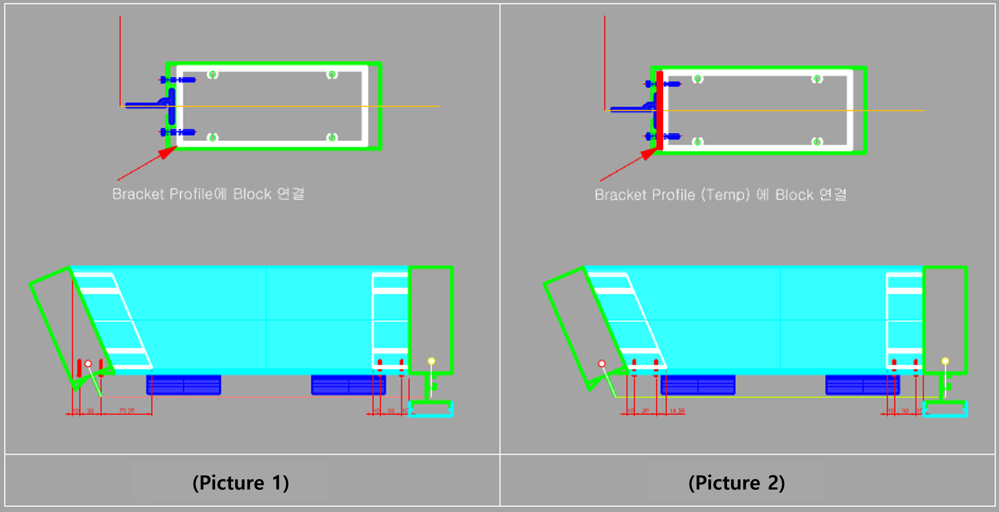
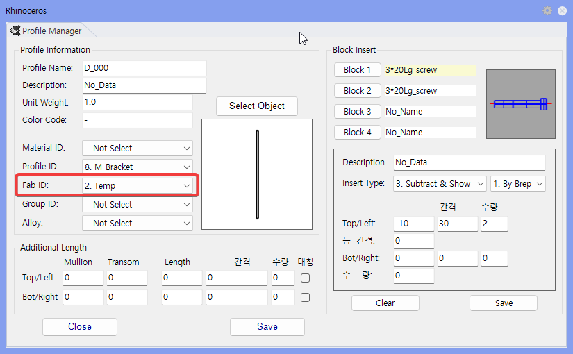

MakeTemp
Command to create an auxiliary Profile with Fab ID 2.Temp and designate it to be deleted after modeling is complete.
After modeling of the selected Surface is completed, Screw Block position is determined based on the maximum length of the shape. When Bracket shape becomes long, Screw Block may not align at the desired position, so this is used to create a small auxiliary Profile in front of the Bracket to adjust the reference length.
MakeTemp in the Rhino command line and press Enter.2.Temp.2.Temp Profile is deleted.

| Item | Description |
|---|---|
| Alignment Reference | Screw Block position aligns to the desired location based on the auxiliary Profile. |
| Deletion Target | Shapes with Fab ID 2.Temp are deleted after modeling is complete. |